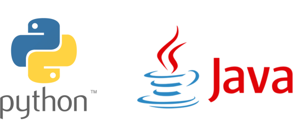

About Our Program
Program Overview
We aim to prepare students for success in the technology industry through comprehensive education in computer science fundamentals, programming, and real-world applications.
Future Careers

Curriculum
Year 1:
Computer Science Essentials (CSE)
Students use visual, block-based programming and then seamlessly transition to text-based programming languages using Python to create a variety of programs.
Year 2:
Computer Science Principles (CSP)
Using Python as a primary tool, students learn the fundamentals of coding, data processing, data security, and task automation.
Year 3:
Computer Science A (CSA)
Students cultivate their understanding of coding using Java by analyzing, writing, and testing code as they explore concepts like modularity, variables, and control structures.
Year 4:
Cybersecurity
Nationally, computational resources are vulnerable and frequently attacked; in Cybersecurity, students solve problems by understanding and closing these vulnerabilities.